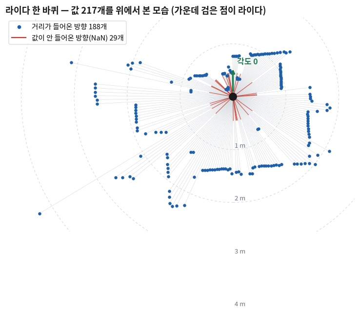
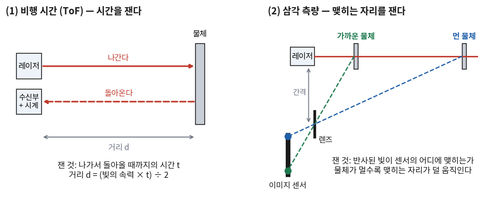
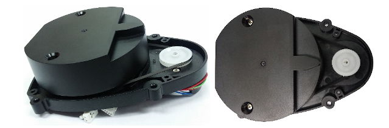
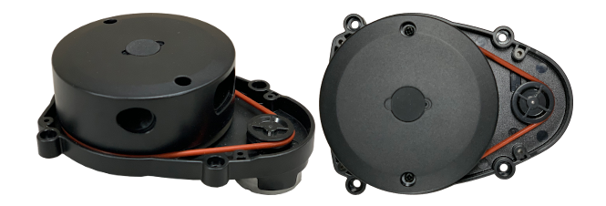
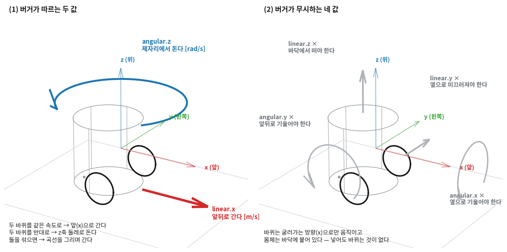

터틀봇3와 라이다
- 터틀봇은 왜 만들어졌고, 지금 우리 앞의 터틀봇3는 무엇으로 이루어져 있나?
- ROS만 깔린 컴퓨터에서 로봇을 움직이려면 무엇을 더 설치하고 설정해야 하나?
- 라이다는 무엇을 재는 센서이고, 거리를 재는 방법은 어떤 것들이 있나?
/scan한 프레임에는 값이 몇 개 들어 있고, 그 값들은 각각 어느 방향의 거리인가?- 로봇에 속도를 보내는
Twist에는 값이 여섯 개인데, 왜linear.x와angular.z둘만 쓰나?
22회까지는 화면 속 거북이가 상대였다. 거북이는 /turtle1/cmd_vel로 속도를 받았고, 자기 위치를 /turtle1/pose로 소수점 아래까지 정확히 알려 줬다.
오늘부터는 책상 위의 실물 로봇 터틀봇3다. 한 사람이 한 대를 맡아, 로봇에 달린 컴퓨터에 모니터와 키보드를 꽂아 그 위에서 바로 작업합니다.
3부까지 따라왔다면 이 로봇 컴퓨터에는 ROS 2 Jazzy만 깔려 있다. 오늘은 그 위에 터틀봇을 움직이는 데 필요한 것을 전부 설치하고 설정해서
로봇을 켜는 데까지 간다. 그다음 로봇이 둘레를 보는 센서인 라이다가 무엇을 재는지, 그리고 로봇에 속도를 보내는 /cmd_vel이 어떻게 생겼는지를 본다.
24회부터는 이 두 토픽 — 보는 /scan과 움직이는 /cmd_vel — 을 코드로 다룬다.
① 터틀봇의 역사 🟢 읽을거리
거북이(turtle)라는 이름은 15회부터 계속 봐 왔다. turtlesim의 그 거북이다. 그런데 책상 위의 이 로봇은 거북이를 닮지 않았다. 이름이 왜 터틀봇일까?
1-1 청소 로봇에 게임기 카메라를 얹었다 — 터틀봇 1 (2010~2011)
이야기는 미국의 로봇 연구소 윌로 개러지(Willow Garage)에서 시작한다. ROS를 처음 만든 곳이다. 그런데 2010년 무렵 ROS 사용자들 사이에서는 불만이 있었다고 한다 — ROS는 PR2처럼 크고 비싼 로봇에서나 돈다는 것이다. PR2는 윌로 개러지가 만든 팔 둘 달린 연구용 로봇으로, 값이 약 40만 달러였다. 학생이나 개인이 ROS를 배우려고 살 수 있는 물건이 아니었다.
윌로 개러지의 엔지니어 멜로니 와이즈(Melonee Wise)와 털리 푸트(Tully Foote)가 싼 로봇을 만들어 보기로 했다. 처음에는 레고 로봇 키트로 해 봤는데 힘이 모자랐다. 그래서 2010년 11월 무렵, 청소 로봇 룸바를 만드는 아이로봇(iRobot)의 교육용 바퀴 로봇 아이로봇 크리에이트(iRobot Create) 위에, 그해 막 나온 게임기용 깊이 카메라 키넥트(Kinect)를 얹었다. 노트북 한 대를 실으면 ROS의 지도 만들기와 자율 주행이 그대로 돌았다. 이것이 첫 터틀봇이다.
이름은 그 두 사람의 말로는 「ROS의 모든 것은 거북이다(Everything in ROS is turtles)」에서 왔다. ROS를 가르치려고 만든 turtlesim이 이미 거북이였고, turtlesim의 거북이는 1960년대 교육용 프로그래밍 언어 로고(Logo)에서 명령을 받아 선을 긋던 거북이 로봇에서 왔다. 여러분이 15~22회에 화면 속 거북이에게 하던 일을 이제 진짜 거북이에게 하게 된 셈이다.
2011년 4월에 예약 판매를 시작했고 값은 1,200달러(크리에이트와 노트북을 이미 가지고 있으면 500달러)였다. PR2의 300분의 1이다.
1-2 바닥판이 한국에서 왔다 — 터틀봇 2 (2012)
크리에이트에는 문제가 있었다. 전자 제품 인증을 받지 않아 다른 나라로 보내기 어려웠고, 220V 전기에서 쓸 수 없었다. 그래서 2012년의 터틀봇 2는 바닥판을 바꿨다. 한국의 유진로봇이 만든 코부키(Kobuki)다. 바퀴 엔코더와 자이로 센서가 들어 있어 자기가 얼마나 움직였는지를 더 잘 쟀다. 위에는 여전히 깊이 카메라를 얹었다.
같은 해 3월, ROS와 시뮬레이터 Gazebo는 윌로 개러지에서 나와 새 비영리 재단 OSRF(뒤에 이름을 Open Robotics로 바꿨다)로 옮겨 갔다. 윌로 개러지는 2014년 초에 문을 닫았다. ROS와 터틀봇은 그 뒤로도 살아남았다.
1-3 처음부터 다시 설계하다 — 터틀봇3 (2016~2017)
2016년 10월, ROS 개발자 모임 ROSCon에서 Open Robotics와 한국의 로보티즈(ROBOTIS)가 터틀봇3를 발표했다. 이번에는 남의 청소 로봇을 빌리지 않고 처음부터 터틀봇으로 쓰려고 설계했다. 발표에서 내건 조건은 넷이었다 — 작고, 싸고, 전부 프로그래밍할 수 있고, 붙여서 늘릴 수 있을 것(Small, Low-cost, Fully programmable, Extensible).
그래서 터틀봇3는 레고처럼 생겼다. 구멍이 숭숭 뚫린 판을 층층이 쌓고, 로보티즈의 모터 다이나믹셀(Dynamixel)을 바퀴로 달고, 모터와 센서를 다루는 보드 OpenCR을 직접 만들어 넣었다. 그리고 깊이 카메라 대신 360도를 도는 라이다를 기본으로 얹었다. 2017년에 나온 작은 쪽이 버거(Burger), 큰 쪽이 와플(Waffle)이다. 버거의 값은 549달러였다. 여러분 앞에 있는 것이 이 버거다.
1-4 다시 청소 로봇으로 — 터틀봇 4 (2022)
2022년의 터틀봇 4는 캐나다의 클리어패스 로보틱스(Clearpath Robotics)가 만들었다. 바닥판은 다시 아이로봇의 교육용 로봇(Create 3)이다. 라이다와 카메라를 둘 다 얹었다. 한 바퀴를 돌아 처음 자리로 온 셈이다.
② 터틀봇3 버거의 구성 🔴 사람이 확인한다
③절에서 설치하는 것들은 전부 이 로봇의 어떤 부품과 이어진다. 무엇을 왜 설치하는지 알려면 로봇이 무엇으로 이루어져 있는지부터 보는 것이 좋다. 로봇을 앞에 두고 아래 표의 부품을 하나씩 찾아보세요.
| 부품 | 하는 일 | 컴퓨터와 무엇으로 이어지나 | ③절에서 설치하는 것 |
|---|---|---|---|
| 로봇 컴퓨터 | ROS 노드가 도는 곳. 원래 버거에는 라즈베리파이가 달려 나오지만 우리 로봇은 작은 x86 PC로 바꿔 달았다 | — | 터틀봇3 패키지 전부 |
| OpenCR | 모터 보드. 바퀴 모터에 명령을 주고, 바퀴가 얼마나 돌았는지와 IMU(기울기·회전 센서) 값을 읽는다. 배터리 전원도 여기서 나눠 준다 | USB — /dev/ttyACM0 | 펌웨어(3-4) · 포트 규칙(3-3) |
| 다이나믹셀 2개 | 좌우 바퀴 모터. 몇 바퀴 돌았는지 스스로 잰다 | OpenCR | dynamixel_sdk(3-1) |
| 라이다 (LDS) | 둘레 360도의 거리를 잰다 (④절) | USB — /dev/ttyUSB0 | 라이다 드라이버(3-1·3-2) · LDS_MODEL(3-5) |
| 배터리 | 리튬 폴리머 배터리. 로봇 전체의 전원 | OpenCR | — |
③ 터틀봇3 시스템 준비 🔴 사람이 친다
ROS 2만 깔린 컴퓨터에서 ros2 launch turtlebot3_bringup robot.launch.py 한 줄로 로봇이 켜지기까지, 무엇을 더 해야 할까?
순서는 로보티즈의 공식 안내서(ROBOTIS e-Manual, TurtleBot3 → Quick Start → SBC Setup · OpenCR Setup의 Jazzy 판)를 따랐고,
아래 명령과 출력은 전부 수업용 로봇 한 대에서 기존 설치를 지우고 처음부터 다시 쳐서 받은 것이다.
| 단계 | 무엇을 | 어떻게 | sudo |
|---|---|---|---|
| 3-1 | 미리 빌드된 패키지 (모터 SDK·메시지·LDS-01 드라이버 등) | apt (14회) | 필요 |
| 3-2 | 터틀봇3 본체 패키지 · LDS-02/03 드라이버 | git clone → colcon build (19회) | — |
| 3-3 | USB 장치 권한 규칙 | 파일 복사 + udevadm | 필요 |
| 3-4 | OpenCR 보드의 펌웨어 | 내려받아 update.sh | — |
| 3-5 | 환경변수 넷 | ~/.bashrc에 한 줄씩 (3회) | — |
| 3-6 | 로봇 켜기와 확인 | ros2 launch (21회) | — |
작업공간 이름: 안내서는 ~/turtlebot3_ws를 쓰지만 이 수업은 19회부터 쓴 ~/ros_ws 하나에 둔다. 24회부터 만드는 노드도 같은 곳에 들어간다.
빌드 옵션: 안내서는 colcon build --parallel-workers 1로 하나씩 빌드하라고 한다. 메모리가 작은 라즈베리파이에서 빌드가 멈추는 것을 막으려는 것이다.
우리 로봇의 PC는 메모리가 넉넉해서 이 옵션 없이 빌드해도 된다(1분이 안 걸린다. 안내서는 라즈베리파이에서 「한 시간 넘게 걸릴 수 있다」고 적었다).
3-1 apt 패키지
먼저 ROS 2가 제대로 깔려 있는지 본다. 14회에서 ~/.bashrc에 넣은 줄이 있으면 된다.
$ grep -n jazzy ~/.bashrc
118:source /opt/ros/jazzy/setup.bash
$ echo $ROS_DISTRO
jazzy그다음 apt로 받을 수 있는 것을 받는다. 안내서는 여섯 줄로 나눠 적었는데 한 줄로 합쳐도 같다.
⌨ 미리 빌드된 패키지 설치
$ sudo apt install python3-argcomplete python3-colcon-common-extensions libboost-system-dev build-essential \
ros-jazzy-hls-lfcd-lds-driver ros-jazzy-turtlebot3-msgs ros-jazzy-dynamixel-sdk ros-jazzy-xacro libudev-dev
다 깔리면 셋 가운데 하나를 ROS에게 물어본다(16회). apt로 깐 ROS 패키지는 /opt/ros/jazzy 아래에 있다.
$ ros2 pkg prefix dynamixel_sdk
/opt/ros/jazzy| 패키지 | 무엇인가 |
|---|---|
ros-jazzy-dynamixel-sdk | 다이나믹셀 모터와 이야기하는 라이브러리. 터틀봇3 노드가 이것으로 OpenCR에 명령을 보낸다 |
ros-jazzy-turtlebot3-msgs | 터틀봇3만 쓰는 메시지 타입 (SensorState 등) |
ros-jazzy-hls-lfcd-lds-driver | LDS-01 라이다의 드라이버 (⑥절) |
ros-jazzy-xacro | 로봇의 생김새를 적은 설명 파일(URDF)을 만드는 도구. 26회의 좌표계가 여기서 나온다 |
libudev-dev · libboost-system-dev | LDS-02/03 드라이버를 빌드할 때 쓰는 C++ 라이브러리 |
python3-colcon-common-extensions · build-essential · python3-argcomplete | 빌드 도구들. 19회에 이미 깔았다면 「이미 최신 버전」이라고 나오고 넘어간다 |
3-2 소스 패키지 빌드
터틀봇3 본체와 LDS-02·LDS-03의 드라이버는 소스를 받아 직접 빌드한다. 세 저장소 모두 jazzy 가지(5회의 브랜치)를 받는다.
⌨ 소스 받기 — 세 저장소
$ mkdir -p ~/ros_ws/src && cd ~/ros_ws/src
$ git clone -b jazzy https://github.com/ROBOTIS-GIT/turtlebot3.git
$ git clone -b jazzy https://github.com/ROBOTIS-GIT/ld08_driver.git
$ git clone -b jazzy https://github.com/ROBOTIS-GIT/coin_d4_driver
turtlebot3 저장소에는 지도 만들기(turtlebot3_cartographer)와 자율 주행(turtlebot3_navigation2) 패키지도 들어 있다.
이 둘은 apt로 깔지 않은 큰 패키지들에 기대고 있어 그대로 두면 빌드가 실패한다. 안내서대로 지운다.
$ cd ~/ros_ws/src/turtlebot3
$ rm -r turtlebot3_cartographer turtlebot3_navigation2
$ ls
CONTRIBUTING.md README.md turtlebot3.repos turtlebot3_description turtlebot3_teleop
ISSUE_TEMPLATE.md docker turtlebot3_bringup turtlebot3_example
LICENSE turtlebot3 turtlebot3_ci.repos turtlebot3_node그리고 19회에서 한 대로 작업공간 맨 위에서 빌드한다.
⌨ 빌드
$ cd ~/ros_ws
$ colcon build --symlink-installStarting >>> turtlebot3_description
Starting >>> turtlebot3_node
Starting >>> turtlebot3_example
(… 가운데 줄임 …)
Finished <<< coin_d4_driver [29.7s]
Finished <<< turtlebot3_node [47.3s]
Starting >>> turtlebot3_bringup
Finished <<< turtlebot3_bringup [0.92s]
Starting >>> turtlebot3
Finished <<< turtlebot3 [0.86s]
Summary: 8 packages finished [49.3s]turtlebot3_node가 로봇의 중심 노드다 — OpenCR과 이야기하며 /cmd_vel을 받고 /odom·/imu를 낸다.
--symlink-install은 19회에는 안 쓴 옵션이다. 아래 🆕 상자에 적었다.
🆕 여기서 처음 나오는 것
colcon build --symlink-install- 빌드한 결과를
install/에 복사하지 않고 원본 파일을 가리키는 바로가기(심볼릭 링크)로 만든다. 그러면 launch 파일이나 설정 파일(.yaml)을 고친 뒤 다시 빌드하지 않아도 고친 내용이 바로 쓰인다. C++ 소스를 고쳤을 때는 여전히 다시 빌드해야 한다.
빌드한 패키지를 쓰려면 작업공간의 설정 파일을 읽어야 한다(19회). 터미널을 열 때마다 읽히게 ~/.bashrc 끝에 한 줄을 넣는다.
3회에서 본 >>는 파일 끝에 덧붙인다. > 하나로 치면 .bashrc가 이 한 줄만 남고 지워지니 조심한다.
$ echo 'source ~/ros_ws/install/setup.bash' >> ~/.bashrc
$ source ~/.bashrc
$ ros2 pkg list | grep -E 'turtlebot3|ld08|coin|hls|dynamixel'
coin_d4_driver
dynamixel_sdk
hls_lfcd_lds_driver
ld08_driver
turtlebot3
turtlebot3_bringup
turtlebot3_description
turtlebot3_example
turtlebot3_msgs
turtlebot3_node
turtlebot3_teleopapt로 받은 셋(dynamixel_sdk·hls_lfcd_lds_driver·turtlebot3_msgs)과 직접 빌드한 여덟이 다 보이면 된다.
3-3 USB 포트 규칙 (udev)
OpenCR과 라이다는 둘 다 USB로 꽂혀 있고, 리눅스에서는 /dev/ttyACM0·/dev/ttyUSB0 같은 장치 파일로 보인다.
프로그램은 이 파일을 열어 장치와 이야기한다. 그런데 이 파일은 기본으로 관리자와 일부 그룹만 열 수 있게 되어 있다.
또 우분투에는 USB에 꽂힌 장치가 휴대폰 모뎀인지 슬쩍 말을 걸어 보는 프로그램(ModemManager)이 있어서, 로봇 보드에 엉뚱한 신호를 보내기도 한다.
터틀봇3 패키지에 이 둘을 막아 주는 규칙 파일이 들어 있다. 시스템 폴더에 복사하고 다시 읽게 한다.
⌨ USB 포트 규칙 설치
$ sudo cp `ros2 pkg prefix turtlebot3_bringup`/share/turtlebot3_bringup/script/99-turtlebot3-cdc.rules /etc/udev/rules.d/
$ sudo udevadm control --reload-rules
$ sudo udevadm trigger
규칙이 먹었는지는 장치 파일을 보면 안다. 권한이 crw-rw-rw-(누구나 읽고 쓴다)로 바뀌고, 라이다에는 /dev/tb3_lidar라는 다른 이름이 하나 더 생긴다.
$ ls -l /dev/ttyACM0 /dev/ttyUSB0 /dev/tb3_lidar
lrwxrwxrwx 1 root root 7 Nov 16 06:58 /dev/tb3_lidar -> ttyUSB0
crw-rw-rw- 1 root dialout 166, 0 Nov 16 07:04 /dev/ttyACM0
crw-rw-rw- 1 root dialout 188, 0 Nov 16 06:58 /dev/ttyUSB0🆕 여기서 처음 나오는 것
- udev ·
udevadm - 장치가 꽂히고 빠질 때
/dev/아래의 장치 파일을 만들고 지우는 리눅스의 관리자다./etc/udev/rules.d/에 규칙 파일을 두면 「이 장치가 꽂히면 이렇게 하라」를 정할 수 있다.udevadm control --reload-rules는 규칙을 다시 읽게 하고,udevadm trigger는 이미 꽂혀 있는 장치에도 새 규칙을 적용하게 한다. - 백틱
`명령` - 안의 명령을 먼저 실행하고 그 출력으로 그 자리를 바꿔 넣는다(명령 치환).
ros2 pkg prefix turtlebot3_bringup이/home/…/ros_ws/install/turtlebot3_bringup을 찍으므로, 그 경로 뒤에 규칙 파일의 나머지 경로가 붙는다.
3-4 OpenCR 펌웨어 ⛔ 사람이 직접
②절에서 본 대로 OpenCR 안의 프로그램(펌웨어)은 컴퓨터 쪽 ROS 패키지와 짝이 맞아야 한다. 로봇을 처음 받았거나, 패키지를 새로 설치했거나,
로봇을 켰는데 /odom이 안 나오고 바퀴가 명령을 안 따르면 펌웨어를 새로 올린다.
펌웨어를 올리는 동안 USB가 빠지거나 다른 모델의 파일을 올리면 보드가 아무 일도 하지 않는 상태가 될 수 있다. 되돌릴 방법(아래 ⚠️)은 있지만 손으로 버튼을 눌러야 한다.
그래서 명령을 한 줄씩 읽고 이해한 다음 직접 칩니다. 올리는 동안에는 로봇 켜기(3-6)를 꺼 두고 USB 선을 건드리지 않습니다 — 켜기가 돌고 있으면 그 노드가 /dev/ttyACM0을 쥐고 있어서 펌웨어를 올릴 수 없다.
⌨ OpenCR 펌웨어 올리기 — 홈 폴더에서
$ cd ~
$ export OPENCR_PORT=/dev/ttyACM0
$ export OPENCR_MODEL=burger
$ rm -rf ./opencr_update.tar.bz2
$ wget https://github.com/ROBOTIS-GIT/OpenCR-Binaries/raw/master/turtlebot3/ROS2/latest/opencr_update.tar.bz2
$ tar -xvf opencr_update.tar.bz2
$ cd ./opencr_update
$ ./update.sh $OPENCR_PORT $OPENCR_MODEL.opencr
올리기가 끝나면 보드가 다시 시작하면서 USB가 한 번 끊겼다 다시 붙는다. 제대로 올라갔는지는 3-6에서 로봇을 켠 뒤 /odom으로 확인한다.
| 줄 | 하는 일 |
|---|---|
export OPENCR_PORT=… · OPENCR_MODEL=… | OpenCR이 꽂힌 장치 파일과 로봇 모델을 변수에 담는다. 와플이면 waffle. 이 터미널에서만 쓰는 값이라 .bashrc에 넣지 않는다 |
wget … · tar -xvf … | 로보티즈가 올려 둔 최신 펌웨어 묶음을 받아 푼다. opencr_update/ 폴더가 생긴다 |
./update.sh 포트 파일 | 그 포트의 보드에 burger.opencr을 올린다. 끝나면 보드가 스스로 다시 시작한다 |
armhf 세 줄은 우리 로봇에서는 필요 없다
안내서에는 펌웨어 전에 sudo dpkg --add-architecture armhf 등 세 줄이 있다. 라즈베리파이처럼 ARM 컴퓨터에서 32비트 ARM용 올리기 프로그램을 돌리려는 것이다.
update.sh를 열어 보면 컴퓨터 종류(uname -m)가 x86_64이면 opencr_ld_shell_x86을 쓰고, 이 파일은 그냥 돈다. 우리 로봇의 PC는 x86_64다.
OpenCR 보드의 PUSH SW2 버튼을 누른 채로 Reset 버튼을 눌렀다 떼고, 그다음 SW2를 뗀다. STATUS 불이 깜빡이면 복구 모드다.
이 상태에서 ./update.sh를 다시 친다(안내서의 방법).
3-5 환경변수
터틀봇3 패키지는 몇 가지를 환경변수(3회)로 물어본다. 네 줄을 ~/.bashrc 끝에 덧붙인다.
⌨ 환경변수 넷 — __ 자리에 자기 번호를 넣는다
$ echo 'export ROS_DOMAIN_ID=__ #TURTLEBOT3' >> ~/.bashrc
$ echo 'export TURTLEBOT3_MODEL=burger' >> ~/.bashrc
$ echo 'export LDS_MODEL=LDS-02' >> ~/.bashrc
$ source ~/.bashrc| 변수 | 무엇을 정하나 | 틀리면 |
|---|---|---|
ROS_DOMAIN_ID | ROS 2 노드들을 무리로 나누는 번호 (아래) | 옆 로봇의 토픽을 받거나, 내 로봇에 옆 사람의 명령이 간다 |
TURTLEBOT3_MODEL | 로봇 모델 — 바퀴 간격 같은 치수와 모양을 고른다 | 속도 계산이 어긋난다. 없으면 켜기가 바로 멈춘다 |
LDS_MODEL | 어느 라이다 드라이버를 띄울지 | /scan이 안 나온다. 일단 LDS-02로 두고 ⑥절에서 실물을 보고 고친다 |
ROS_DOMAIN_ID가 왜 필요할까? 17회에서 ROS 2의 노드는 「같은 망에 있으면 서로를 찾아낸다」고 했다.
한 강의실에서 로봇 여러 대가 같은 와이파이에 붙으면, 내 노드가 보낸 /cmd_vel을 옆자리 로봇도 받는다. 토픽 이름이 같기 때문이다.
도메인 ID(domain ID)는 노드를 서로 안 보이는 무리로 나누는 번호이고, 번호가 같은 노드끼리만 서로를 찾는다.
정하지 않으면 0이다. 그래서 로봇마다 다른 번호를 쓴다. 번호는 수업에서 한 사람에 하나씩 정해 줍니다. 자기 번호를 적어 두세요.
내 ROS_DOMAIN_ID = ____새 터미널을 열고 네 값이 다 들어갔는지 본다. 이 자료를 만든 로봇은 30번이다.
$ tail -4 ~/.bashrc
source ~/ros_ws/install/setup.bash
export ROS_DOMAIN_ID=30 #TURTLEBOT3
export TURTLEBOT3_MODEL=burger
export LDS_MODEL=LDS-02
$ printenv | grep -E 'ROS_DOMAIN_ID|TURTLEBOT3_MODEL|LDS_MODEL'
ROS_DOMAIN_ID=30
LDS_MODEL=LDS-02
TURTLEBOT3_MODEL=burger.bashrc를 고친 뒤에는 터미널을 새로 연다
.bashrc는 터미널이 열릴 때 읽힌다(3회). 이미 열려 있던 터미널에는 고치기 전의 값이 그대로 남아 있다.
source ~/.bashrc를 친 그 터미널만 새 값을 가진다. 헷갈리면 터미널을 전부 닫고 새로 여는 것이 가장 확실하다.
3-6 로봇 켜기 (bringup)
이제 로봇의 모터 보드와 라이다를 ROS 2 토픽으로 이어 주는 노드들을 한꺼번에 띄운다. 21회에서 배운 launch 파일이고, 이것을 흔히 bringup(브링업)이라고 부른다. 로봇의 전원 스위치를 켠 다음 친다.
⌨ 로봇 켜기 — 터미널 1에서. 이 터미널은 그대로 둔다
$ ros2 launch turtlebot3_bringup robot.launch.py끌 때는 이 터미널에서 Ctrl+C.
실제로 찍힌 줄 가운데 볼 것만 남기면 이렇다(대괄호 안의 시각은 줄였다).
[INFO] [robot_state_publisher-1]: process started with pid [16373]
[INFO] [ld08_driver-2]: process started with pid [16374]
[INFO] [turtlebot3_ros-3]: process started with pid [16375]
[turtlebot3_ros-3] [INFO] [DynamixelSDKWrapper]: Succeeded to open the port(/dev/ttyACM0)!
[turtlebot3_ros-3] [INFO] [DynamixelSDKWrapper]: Succeeded to change the baudrate!
[ld08_driver-2] /dev/ttyACM0 OpenCR Virtual ComPort in FS Mode
[ld08_driver-2] /dev/ttyUSB0 CP2102 USB to UART Bridge Controller
[ld08_driver-2] FOUND LDS-02
[ld08_driver-2] LDS-02 started successfully
[turtlebot3_ros-3] [INFO] [turtlebot3_node]: Start Calibration of Gyro
[turtlebot3_ros-3] [INFO] [turtlebot3_node]: Calibration End
[turtlebot3_ros-3] [INFO] [turtlebot3_node]: Run!
[turtlebot3_ros-3] [INFO] [diff_drive_controller]: Run!Succeeded to open the port(/dev/ttyACM0) — OpenCR과 이어졌다. FOUND LDS-02 — 라이다를 찾았다(⑥절).
마지막 Run! — 준비가 끝났다. Start Calibration of Gyro에서 Calibration End까지 5초쯤 걸리는데, 그동안은 로봇을 건드리지 않는 것이 좋다.
로봇이 가만히 있다고 보고 자이로 센서의 영점을 잡는 중이기 때문이다.
터미널 2를 열어 18회의 명령으로 무엇이 떴는지 본다.
$ ros2 node list
/diff_drive_controller
/ld08_driver
/robot_state_publisher
/turtlebot3_node
$ ros2 topic list
/battery_state
/cmd_vel
/imu
/joint_states
/magnetic_field
/odom
/parameter_events
/robot_description
/rosout
/scan
/sensor_state
/tf
/tf_static무엇을 먼저 볼지: 오늘 남은 시간에 보는 것은 두 토픽이다.
| 토픽 | 방향 | 무엇 | 어디서 |
|---|---|---|---|
/scan | 로봇 → 내 노드 | 라이다가 잰 둘레의 거리 | ④~⑦절 |
/cmd_vel | 내 노드 → 로봇 | 로봇에 보내는 속도 명령 | ⑧절 |
/odom(바퀴로 어림한 로봇의 위치)과 /tf(좌표계)는 26회에서 쓴다. 다만 /odom은 지금 한 번 봐 둔다 —
OpenCR이 바퀴 값을 읽어 보내야 나오는 토픽이라, 펌웨어(3-4)가 제대로 올라갔는지를 이것으로 알 수 있다.
$ ros2 topic hz /odom
average rate: 19.974
min: 0.038s max: 0.064s std dev: 0.00687s window: 22
(… Ctrl+C로 멈춘다 …)1초에 20번쯤 나오면 된다. 여기까지 됐으면 시스템 준비는 끝이다. 다음 수업부터는 로봇 전원을 켜고 3-6의 한 줄만 치면 된다.
④ 라이다(LiDAR) 🔴 사람이 이해한다
로봇이 장애물을 피해 가려면 무엇을 알아야 할까? 둘레의 물체가 어느 방향으로, 얼마나 떨어져 있는지다. 카메라는 색과 모양은 잘 보지만 사진 한 장만으로는 거리를 바로 알기 어렵다. 거리를 직접 재 주는 센서가 있으면 일이 훨씬 쉬워진다.
라이다(LiDAR, Light Detection And Ranging)는 빛을 쏘고 물체에서 되돌아온 빛을 받아 그 물체까지의 거리를 재는 센서다. 레이저 한 줄기로는 한 방향의 거리 하나만 나온다. 그래서 터틀봇3 위에 얹힌 것 같은 2차원 라이다는 레이저를 모터로 빙빙 돌린다. 한 바퀴 도는 동안 조금씩 다른 방향으로 수백 번 재고, 그 결과를 한 묶음으로 내놓는다. 이 한 바퀴치 묶음을 스캔(scan)이라고 한다.

⑤ 비행 시간(ToF)과 삼각 측량 🔴 사람이 이해한다
빛을 쏴서 거리를 잰다고 했는데, 정확히 무엇을 재면 거리가 나올까? 방식은 크게 둘이다.
비행 시간(Time of Flight, ToF) 방식은 빛이 나갔다가 돌아오는 데 걸린 시간을 잰다. 빛의 속력 c는 정해져 있으니 거리는 d = c × t ÷ 2다(갔다가 돌아오므로 2로 나눈다). 메아리가 돌아오는 시간으로 절벽까지 거리를 어림하는 것과 같은 생각이다.
삼각 측량(triangulation) 방식은 시간 대신 위치를 잰다. 레이저 옆으로 조금 떨어진 자리에 렌즈와 작은 이미지 센서를 둔다. 레이저가 물체에 닿아 생긴 빛점을 이 센서가 비스듬히 보면, 물체가 가까우냐 머냐에 따라 빛점이 센서 위에 맺히는 자리가 달라진다. 레이저·렌즈·물체가 삼각형을 이루어서 붙은 이름이다.

| 비행 시간 (ToF) | 삼각 측량 | |
|---|---|---|
| 재는 것 | 빛이 갔다 오는 시간 | 빛점이 센서에 맺히는 자리 |
| 어려운 점 | 빛이 너무 빠르다 — 1cm를 가리려면 약 67피코초(1조분의 67초)를 재야 해서 회로가 비싸다 | 멀어질수록 맺히는 자리가 거의 안 움직여 멀수록 덜 정확하다. 너무 가까우면 빛점이 센서 밖으로 나가 못 잰다 |
| 잘하는 곳 | 먼 거리 (수십~수백 m) | 가까운 거리 (수 m 안쪽) |
| 어디에 쓰나 | 자율주행 자동차의 라이다 | 청소 로봇 · 터틀봇3의 LDS-02 |
⑥ 내 로봇의 라이다와 LDS_MODEL 🔴 사람이 확인한다
3-5에서 LDS_MODEL을 일단 LDS-02로 넣었다. 그런데 터틀봇3는 2017년부터 팔린 로봇이라 그사이에 달려 나오는 라이다가 바뀌었고,
우리 수업의 로봇에도 종류가 섞여 있다. 내 로봇의 라이다는 무엇일까?
로보티즈는 라이다에 LDS(Laser Distance Sensor)라는 이름과 번호를 붙여 부른다. 로보티즈의 안내에 따르면 2022년부터 LDS-02가 LDS-01을 대신했고, 2025년부터는 LDS-03이 LDS-02를 대신하고 있다.
셋 다 한 바퀴 돌며 방향마다 거리를 재는 2차원 라이다이고, 내놓는 /scan의 모양도 같다. 다른 것은 드라이버뿐이고, 드라이버는 LDS_MODEL을 보고 고른다.


| LDS-01 | LDS-02 | LDS-03 | |
|---|---|---|---|
| 다른 이름 · 만든 곳 | HLS-LFCD2 · HLDS | LD08 · LDROBOT | COIN-D4 |
LDS_MODEL에 적는 값 | LDS-01 | LDS-02 | LDS-03 |
| 드라이버 패키지 (노드 이름) | hls_lfcd_lds_driver | ld08_driver | coin_d4_driver |
| 3절에서 어떻게 깔았나 | apt (3-1) | 소스 빌드 (3-2) | 소스 빌드 (3-2) |
6-1 하드웨어를 보고 고르기
로봇 맨 위의 라이다를 보고 위 사진과 맞춰 본다. 흰 도르래면 LDS-01, 주황 벨트면 LDS-02다. 둘 다 아니면 LDS-03일 가능성이 크다.
그다음 ~/.bashrc의 값과 견준다.
$ grep -n LDS_MODEL ~/.bashrc
125:export LDS_MODEL=LDS-02
실물과 다르면 우분투의 「텍스트 편집기」로 ~/.bashrc를 열어 그 줄의 끝을 고치고 저장한다. 터미널에서 이렇게 열 수도 있다.
$ gnome-text-editor ~/.bashrc
고친 뒤에는 3-5의 ⚠️대로 터미널을 새로 열고, 켜기(3-6)도 Ctrl+C로 끄고 새 터미널에서 다시 띄운다.
echo 'export LDS_MODEL=…' >> ~/.bashrc를 한 번 더 치는 것은 권하지 않는다 — 줄이 둘이 되어 뒤의 것이 이기는데, 나중에 보면 어느 쪽이 쓰이는지 헷갈린다.
6-2 켜기 로그로 확인하기
값이 맞으면 켜기(3-6) 로그에 그 라이다를 찾았다는 줄이 찍힌다. LDS-02일 때는 이렇다.
[ld08_driver-2] /dev/ttyACM0 OpenCR Virtual ComPort in FS Mode
[ld08_driver-2] /dev/ttyUSB0 CP2102 USB to UART Bridge Controller
[ld08_driver-2] FOUND LDS-02
[ld08_driver-2] LDS-02 started successfully
값이 실물과 다르면 어떻게 될까? LDS-02가 달린 이 로봇에서 일부러 LDS_MODEL=LDS-01로 켜 봤다. 켜기 로그에는 라이다 쪽으로 이 세 줄만 찍혔다.
[INFO] [hlds_laser_publisher-2]: process started with pid [15153]
[hlds_laser_publisher-2] [INFO] [hlds_laser_publisher]: Init hlds_laser_publisher Node Main
[hlds_laser_publisher-2] [INFO] [hlds_laser_publisher]: port : /dev/ttyUSB0 frame_id : base_scan$ ros2 node list
/diff_drive_controller
/hlds_laser_publisher
/robot_state_publisher
/turtlebot3_node
$ ros2 topic info /scan
Type: sensor_msgs/msg/LaserScan
Publisher count: 1
Subscription count: 0
$ ros2 topic hz /scan
(… 아무것도 찍히지 않는다 …)
LDS-01의 드라이버(/hlds_laser_publisher)가 떠서 /scan의 발행자로 등록은 된다. 그런데 라이다가 그 드라이버의 말을 알아듣지 못하니 메시지가 한 번도 오지 않는다.
빨간 오류 줄도 없고 ros2 topic list에도 /scan이 보이니 「코드는 그대로인데 스캔이 안 온다」로 보인다. 그때는 코드보다 켜기 로그의 라이다 줄과 LDS_MODEL부터 본다.
이때는 Ctrl+C를 눌러도 이 드라이버가 한참 끝나지 않고 남아 있었다. 그러면 그 터미널을 닫고 새로 연다.
⑦ /scan 토픽 🔴 사람이 읽는다
④절의 그림은 스캔 한 바퀴를 점으로 그린 것이었다. 그 숫자들은 ROS에서 어떤 모양으로 올까? 18회의 명령 셋 — info·hz·echo — 으로 차례로 본다.
켜기(3-6)는 터미널 1에서 계속 돌고 있어야 한다.
7-1 인터페이스
$ ros2 topic info /scan
Type: sensor_msgs/msg/LaserScan
Publisher count: 1
Subscription count: 0
발행하는 쪽이 하나다 — ⑥절의 라이다 드라이버다. 타입은 sensor_msgs/msg/LaserScan. 17회에서 이름만 봤던 그 메시지다. 생김새를 본다.
$ ros2 interface show sensor_msgs/msg/LaserScan
# Single scan from a planar laser range-finder
(… 설명 주석 줄임 …)
std_msgs/Header header # timestamp in the header is the acquisition time of
builtin_interfaces/Time stamp
int32 sec
uint32 nanosec
string frame_id
# the first ray in the scan.
#
# in frame frame_id, angles are measured around
# the positive Z axis (counterclockwise, if Z is up)
# with zero angle being forward along the x axis
float32 angle_min # start angle of the scan [rad]
float32 angle_max # end angle of the scan [rad]
float32 angle_increment # angular distance between measurements [rad]
float32 time_increment # time between measurements [seconds] - if your scanner
# is moving, this will be used in interpolating position
# of 3d points
float32 scan_time # time between scans [seconds]
float32 range_min # minimum range value [m]
float32 range_max # maximum range value [m]
float32[] ranges # range data [m]
# (Note: values < range_min or > range_max should be discarded)
float32[] intensities # intensity data [device-specific units]. If your
# device does not provide intensities, please leave
# the array empty.무엇을 먼저 볼지: ranges와 angle_으로 시작하는 셋이다. 이 넷이 「어느 방향으로 몇 m」를 만든다.
| 필드 | 단위 | 뜻 |
|---|---|---|
header.frame_id | — | 이 값들을 어느 좌표계에서 쟀나. 라이다 자신이다(26회) |
ranges[] | m | 방향마다 잰 거리를 한 줄로 늘어놓은 배열. 이 메시지의 본체다 |
angle_min | rad | ranges[0]의 방향 |
angle_increment | rad | 이웃한 두 값 사이의 각도. 인덱스가 하나 늘 때마다 방향이 이만큼 돈다 |
angle_max | rad | 마지막 값의 방향 |
scan_time | s | 한 바퀴에 걸린 시간 |
range_min · range_max | m | 믿을 수 있는 거리의 범위 — 라고 주석에 적혀 있다(7-3에서 실제 값을 본다) |
intensities[] | 장치마다 다르다 | 되돌아온 빛의 세기. ranges와 같은 길이 |
i의 값이 가리키는 방향은 이렇다.
방향(rad) = angle_min + i × angle_increment이 식은 24회의 중심이 된다. 오늘은 이 식이 있다는 것까지만 봐 둔다.
7-2 주기
$ ros2 topic hz /scan
average rate: 10.345
min: 0.090s max: 0.110s std dev: 0.00627s window: 12
average rate: 10.312
(… 이어서 계속 찍힌다. Ctrl+C로 멈춘다 …)scan_time도 0.096 정도로 나온다(7-3). 모터 빠르기가 조금씩 흔들려서 이 숫자도 매번 조금 다르다.
7-3 실제 데이터
한 번만 받아 본다. 로봇에서 실제로 받은 출력이고, 긴 배열은 가운데를 줄였다.
$ ros2 topic echo /scan --once
header:
stamp:
sec: 1794778278
nanosec: 227237329
frame_id: base_scan
angle_min: 0.014005683362483978
angle_max: 6.267982482910156
angle_increment: 0.02840331196784973
time_increment: 0.0004368128429632634
scan_time: 0.0961795374751091
range_min: 0.0
range_max: 100.0
ranges:
- 0.5550000071525574
- 0.5529999732971191
- 0.5540000200271606
- .nan
- 0.5
- 0.5059999823570251
(… 가운데 줄임 …)
- '...'
intensities:
- 220.0
- 224.0
- 222.0
- .nan
- 226.0
(… 아래 줄임 …)무엇을 먼저 볼지: angle_increment와 ranges의 맨 끝 '...'이다.
| 필드 | 받은 값 | 뜻 |
|---|---|---|
frame_id | base_scan | 라이다 자신의 좌표계 이름 |
angle_min | 0.0140 rad = 0.80° | 첫 값은 앞에서 0.8° 돌아간 방향이다. 0°가 아니다 |
angle_increment | 0.02840 rad = 1.63° | 이웃한 값 사이 각도. 라디안 × 180 ÷ π로 도로 바꿨다 |
angle_max | 6.268 rad = 359.1° | 마지막 값은 거의 한 바퀴 다 돈 방향 |
ranges의 첫 값 | 0.555 | 0.8° 방향으로 55.5cm 앞에 무언가가 있다 |
range_min · range_max | 0.0 · 100.0 | 드라이버가 적어 넣은 숫자다. LDS-02가 실제로 잴 수 있는 범위는 0.16~8m다(사양표) |
거리 값의 소수점 아래가 길게 붙는 것은 측정이 그만큼 정밀해서가 아니라, 라이다가 준 0.555를 실수(float32)로 담았다가 다시 찍었기 때문이다.
그럼 한 바퀴에 값이 몇 개 들어 있을까? 사양표에는 LDS-02의 각도 간격이 「1도」로 적혀 있으니 360개일 것 같다.
그런데 받은 angle_increment는 1.63°다. 위 출력에서 개수를 바로 세지 못하는 것은 '...' 때문이다.
🆕 이 출력에서 처음 나오는 것
'...'ros2 topic echo는 배열이 길면 앞의 128개까지만 찍고 나머지를'...'로 줄인다. 값이 거기서 끝난 것이 아니다. 전부 보려면--full-length를 붙인다..nan- NaN(Not a Number, 「숫자가 아님」)을 이 출력 형식(YAML)에서 적는 모양이다. 그 방향은 거리를 못 쟀다는 표시다. 7-4에서 본다.
그런데 배열 전체를 찍지 않아도 개수는 알 수 있다. 첫 값의 방향(angle_min)에서 마지막 값의 방향(angle_max)까지를 간격으로 나누면 칸 수가 나오고, 거기에 1을 더하면 값의 개수다.
위 출력의 세 숫자를 넣어 본다.
값의 개수 = (angle_max − angle_min) ÷ angle_increment + 1
= (6.2680 − 0.0140) ÷ 0.02840 + 1
≒ 221개한 바퀴의 값 개수 = 1초에 재는 횟수 ÷ 1초에 도는 바퀴 수 = 2,300 ÷ 10.3 ≒ 223개
이웃한 값 사이 각도 = 360° ÷ 223 ≒ 1.6°
사양표의 「1도」는 1초에 5바퀴쯤 천천히 돌 때의 이야기다(2,300 ÷ 5 = 460개면 0.78도이니 1도보다 촘촘하다).
이 로봇은 그 두 배로 빨리 돌고 있어서 자주 받는 대신 성기게 받는다. 그리고 회전 빠르기가 조금씩 흔들리므로
값의 개수와 angle_min이 프레임마다 다르다 — 100프레임을 세어 보면 아래와 같다.
ranges 길이별 프레임 수: {218: 7, 219: 23, 220: 56, 221: 14}
angle_increment(도): 1.625 ~ 1.638
길이 x 간격(도): 355.4 ~ 359.9
NaN 개수: 16 ~ 31
angle_min(도): 0.03 ~ 3.64위 숫자는 /scan을 100번 받아 세는 작은 파이썬 노드로 얻었다(코드는 싣지 않는다). 받을 때마다 조금씩 다르다.
값이 360개이고 간격이 1도라면 인덱스가 곧 각도다 — 인덱스 90이 90°, 곧 왼쪽이다. 인터넷의 예제 코드가 흔히 이렇게 쓴다. 그런데 이 로봇에서 인덱스 90은 0.8° + 90 × 1.63° ≒ 147°로, 왼쪽 뒤를 가리킨다. 게다가 개수와 첫 각도가 매 프레임 바뀐다. 그래서 방향은 언제나 7-1의 식으로 계산한다. 24회에서 이것을 코드로 짠다.
7-4 못 잰 방향 — NaN
위 출력의 넷째 값은 .nan이었다. 라이다가 돌고 있는데 왜 빈 방향이 생길까? 라이다는 되돌아온 빛으로 잰다.
빛이 돌아오지 않거나, 돌아왔는데 잴 수 없는 자리에 맺히면 값이 없다. 흔한 경우는 넷이다.
| 경우 | 무슨 일이 생기나 | 이 로봇에서 해 본 것 |
|---|---|---|
| 너무 가깝다 | 빛점이 센서 바깥에 맺힌다(⑤절). LDS-02는 0.16m 안쪽 | 손바닥을 라이다에 바짝 대면 그 방향이 내내 nan |
| 너무 멀다 | 돌아온 빛이 약하다 | 방 안에서 가장 먼 값이 5m쯤이었다 |
| 검은 물체 | 빛을 흡수하는 재질이면 돌려보내는 것이 적다 | 60cm 앞의 검은 벽은 흰 벽만큼 잘 잡혔다 — 눈에 검어도 라이다의 빛(적외선)은 잘 돌려보내는 재질도 있다 |
| 유리 · 거울 | 빛이 지나가거나 엉뚱한 쪽으로 튄다 | 유리 자리는 비고 유리 너머의 벽이 찍혔다 — 값이 없는 것보다 틀린 값이 더 까다롭다 |
값이 없는 방향을 배열에서 빼 버리면 그 뒤의 값이 한 칸씩 당겨져 방향이 다 틀어진다. 그래서 드라이버는 자리는 그대로 두고 「숫자가 아니다」라는 표시(NaN)를 넣는다. NaN은 13회에서 한 번 만났다 — 어떤 값과 비교해도 거짓이다. 「앞 거리가 0.3보다 작으면 멈춘다」에 NaN이 들어가면 멈추지 않는다. 한 프레임에 스무 개 넘게 들어오므로 쓰기 전에 걸러야 하고, 거르는 코드는 24회에서 쓴다.
⑧ /cmd_vel과 Twist 🔴 사람이 이해한다
/scan이 로봇의 눈이라면 로봇의 다리는 무엇으로 움직일까? 20회에 거북이를 /turtle1/cmd_vel로 움직였다. 실물 로봇도 같은 생각이다 —
속도를 토픽으로 보내면 로봇이 그 속도로 바퀴를 돌린다. 이름은 /cmd_vel(command velocity, 속도 명령)이다.
8-1 속도 명령 토픽
$ ros2 topic info /cmd_vel
Type: geometry_msgs/msg/TwistStamped
Publisher count: 0
Subscription count: 1
구독하는 쪽이 하나 — 3-6에서 띄운 turtlebot3_node다. 이 노드가 받은 속도를 두 바퀴의 회전 속도로 나눠 OpenCR에 보낸다(②절).
타입이 거북이 때의 Twist가 아니라 TwistStamped인 것을 눈여겨 둔다. 먼저 Twist부터 본다.
8-2 Twist — 속도 여섯 개
$ ros2 interface show geometry_msgs/msg/Twist
# This expresses velocity in free space broken into its linear and angular parts.
Vector3 linear
float64 x
float64 y
float64 z
Vector3 angular
float64 x
float64 y
float64 z
Twist는 물체가 움직이는 빠르기를 담는 메시지다. linear(직선 속도, m/s)와 angular(회전 속도, rad/s)가
각각 x·y·z 세 값이라 모두 여섯 개다. 공중에 뜬 드론이라면 여섯 방향 모두로 움직일 수 있다 — 앞뒤·좌우·위아래로 가고, 세 축 둘레로 돈다.
이 x·y·z는 로봇 몸체에 붙은 좌표축이다. ROS의 로봇은 x가 앞, y가 왼쪽, z가 위다(25회에서 자세히 본다).
회전은 그 축을 엄지로 잡았을 때 나머지 손가락이 감기는 쪽이 양수다(오른손 법칙) — angular.z가 양수면 위에서 볼 때 반시계, 곧 왼쪽으로 돈다.

Twist의 여섯 값.
(1) 바퀴 둘로 만들 수 있는 움직임은 앞뒤(linear.x)와 제자리 회전(angular.z)뿐이다. (2) 나머지 넷은 바퀴로 만들 수 없다.
왜 둘뿐일까? 버거는 바퀴 두 개를 좌우에 달고 두 바퀴의 속도 차이로 방향을 바꾸는 로봇이다(차동 구동, differential drive).
두 바퀴를 같은 속도로 돌리면 앞으로 가고(linear.x), 반대로 돌리면 제자리에서 z축 둘레로 돈다(angular.z). 둘을 섞으면 곡선을 그린다.
바퀴는 굴러가는 방향으로만 움직이므로 옆으로 미끄러지는 linear.y는 만들 수 없고,
몸체가 바닥에 붙어 있으므로 뜨거나(linear.z) 기우는(angular.x·angular.y) 것도 할 수 없다.
그래서 turtlebot3_node는 그 넷을 넣어도 무시한다.
| 값 | 단위 | 양수면 | 버거의 한계 |
|---|---|---|---|
linear.x | m/s | 앞으로 간다 | 0.22 m/s |
angular.z | rad/s | 위에서 볼 때 반시계 — 왼쪽으로 돈다 | 2.84 rad/s |
linear.y · linear.z · angular.x · angular.y | — | 쓰이지 않는다 | — |
turtlebot3_teleop)의 소스에 적힌 상수(BURGER_MAX_LIN_VEL = 0.22, BURGER_MAX_ANG_VEL = 2.84)다.
20회의 거북이도 사실 같은 두 값으로 움직였다. turtlesim의 거북이도 옆으로는 못 가는 로봇이었기 때문이다.
8-3 TwistStamped — 시각과 좌표계가 붙은 Twist
$ ros2 interface show geometry_msgs/msg/TwistStamped
# A twist with reference coordinate frame and timestamp
std_msgs/Header header
builtin_interfaces/Time stamp
int32 sec
uint32 nanosec
string frame_id
Twist twist
Vector3 linear
float64 x
float64 y
float64 z
Vector3 angular
float64 x
float64 y
float64 z
TwistStamped는 Twist 하나(twist) 앞에 header를 붙인 것이다. header는 LaserScan의 맨 앞에도 있었다 —
언제(stamp) 어느 좌표계(frame_id) 기준인지를 적는 칸이다. 그래서 값에 닿는 경로가 한 단계 길어진다 — twist.linear.x, twist.angular.z.
터틀봇3의 Jazzy 판은 /cmd_vel을 TwistStamped로 받도록 기본값이 정해져 있다(turtlebot3_bringup/param/burger.yaml의 enable_stamped_cmd_vel: true).
20회처럼 Twist로 보내면 토픽 이름이 같아도 타입이 달라서 이어지지 않는다. 실제로 보내 보는 것은 24회 ⑦절에서 바퀴를 띄워 놓고 한다.
🧪 실습 — 내 로봇 준비 확인 🔴 사람이 확인한다
이걸 해 보면 무엇을 알게 되나
내 로봇이 24회부터의 실습을 할 준비가 됐는지를 스스로 확인할 수 있다. 다음 수업부터 무언가 안 될 때 어디부터 볼지도 이 순서와 같다.
준비물
- ③절을 마친 로봇, 터미널 둘 (터미널 1에 켜기 3-6)
절차
- (3분) 새 터미널에서
printenv | grep -E 'ROS_DOMAIN_ID|TURTLEBOT3_MODEL|LDS_MODEL'— 세 값이 다 나오고, 도메인 번호가 자기 번호인가 - (3분) 라이다를 눈으로 보고 ⑥절의 사진과 맞춰,
LDS_MODEL이 실물과 같은가. 다르면 고치고 켜기를 다시 띄운다 - (3분) 켜기 로그에
Succeeded to open the port·FOUND LDS-…(또는 그 라이다의 시작 줄) ·Run!이 있는가 - (3분)
ros2 topic hz /scan— 1초에 몇 번 오나 - (5분)
ros2 topic echo /scan --once—angle_increment를 도로 바꾸고, 7-3의 식으로 한 바퀴의 값 개수를 계산한다.--full-length를 붙여 다시 받아 배열이 정말 그만큼 긴지 끝까지 내려 본다 - (3분)
ros2 topic info /cmd_vel— 타입이 무엇이고 구독하는 쪽이 몇인가
이렇게 되면 성공이다
| 번호 | 이 자료의 로봇에서 | 여러분의 로봇에서 |
|---|---|---|
| 1 | ROS_DOMAIN_ID=30 · burger · LDS-02 | 도메인 번호는 자기 번호 |
| 2·3 | 주황 벨트 · FOUND LDS-02 | 실물 · 변수 · 로그 셋이 같은 라이다를 가리킨다 |
| 4 | 약 10.3 Hz | 라이다마다 다를 수 있다. 숫자가 꾸준히 나오면 된다 |
| 5 | 1.63° · 계산한 개수 221개 · 100프레임에 218~221개 | 계산과 실제 길이가 몇 개 안에서 맞는다. 360개가 아니다 |
| 6 | geometry_msgs/msg/TwistStamped, 구독 1 | 같다 |
이 자료의 출력은 터틀봇3 버거(LDS-02, 우분투 24.04 + ROS 2 Jazzy) 한 대에서 받은 것이다. 거리 값과 NaN의 개수, 값의 개수는 방과 로봇에 따라, 그리고 받을 때마다 조금씩 다르다.
한 장 요약
무엇을 먼저 볼지: 오른쪽 「이것만 알면 된다」 열이다.
| 용어 | 한 줄 정의 | 이 로봇에서 본 것 | 이것만 알면 된다 |
|---|---|---|---|
| 터틀봇 | ROS를 배우는 사람을 위한 값싼 표준 로봇 | 터틀봇3 버거 (2017, 로보티즈) | 교재·예제가 이 로봇 기준이다 |
| OpenCR · 펌웨어 | 모터·IMU를 다루는 보드 · 그 안의 프로그램 | /dev/ttyACM0 | 컴퓨터 패키지와 짝이 맞아야 한다. ⛔ 올리는 것은 사람이 |
| bringup | 로봇을 ROS 토픽으로 이어 주는 노드 묶음을 띄우는 것 | ros2 launch turtlebot3_bringup robot.launch.py | Run!이 찍히면 준비 끝 |
ROS_DOMAIN_ID | 노드를 무리로 나누는 번호 | 30 | 로봇마다 다른 번호 |
LDS_MODEL | 어느 라이다 드라이버를 띄울지 | LDS-02 → /ld08_driver | 실물을 보고 맞춘다. 다르면 /scan이 안 온다 |
| 라이다 · 스캔 | 빛을 쏴서 거리를 재는 센서 · 한 바퀴치 거리 값 묶음 | /scan, 약 10.3 Hz | 내놓는 것은 물체가 아니라 방향마다 거리 하나다 |
| 비행 시간 · 삼각 측량 | 갔다 오는 시간을 잰다 · 맺히는 자리를 잰다 | LDS-02는 삼각 측량 | 삼각 측량은 멀수록 덜 정확하고, 너무 가까우면 못 잰다 |
LaserScan | /scan의 메시지 타입 | 한 바퀴 218~221개, 간격 약 1.63° | 방향 = angle_min + i × angle_increment. 360개 · 1도가 아니다 |
| NaN | 「숫자가 아님」 — 그 방향은 못 쟀다 | 한 프레임에 16~31개 | 비교하면 언제나 거짓. 쓰기 전에 거른다 |
Twist · TwistStamped | 직선·회전 속도 여섯 값 · 거기에 header를 붙인 것 | /cmd_vel은 TwistStamped | 버거가 따르는 것은 linear.x(앞뒤)와 angular.z(회전)뿐 |
🤖 오늘 나온 프롬프트 모음 🟢 맡긴다
오늘은 설치와 확인이 중심이었다. 설치가 막혔을 때 오류 메시지를 읽고 원인을 좁히는 일은 에이전트가 잘하는 편이다. 다만 sudo가 들어가는 명령과 펌웨어 올리기는 직접 칩니다. 에이전트에게는 「무엇을 칠지」까지만 받는다.
| 프롬프트 | 받은 뒤 사람이 확인하는 것 |
|---|---|
| 켜기 오류 진단 | 후보마다 알려 준 명령을 직접 쳐서 결과를 본다. LDS_MODEL·포트 권한·펌웨어 순으로 ③절과 맞춰 본다 |
| 스캔 읽기 | 90도 인덱스를 7-1의 식으로 직접 한 번 계산해 견준다. 인덱스 90이라고 답하면 틀린 것이다 |
✅ 오늘의 점검
조금 더 알아두면 시험 범위 아님
드라이버는 range_max에 왜 100을 넣나 — 소스를 열어 보면
LDS-02의 드라이버 ld08_driver는 3-2에서 소스를 받았으니 ~/ros_ws/src/ld08_driver/src/lipkg.cpp에 있다. 스캔 메시지를 채우는 자리를 보면 이렇다.
range_min = 0.0;
range_max = 100.0;
...
angle_increment = ANGLE_TO_RADIAN(mSpeed / 2300);
...
output.ranges.assign(beam_size, std::numeric_limits<float>::quiet_NaN());
첫 두 줄이 7-3의 0.0과 100.0이다. 라이다에게 물어본 값이 아니라 코드에 적어 둔 숫자다. 그래서 믿을 수 있는 범위는 사양표(0.16~8m)에서 가져와야 한다.
셋째 줄의 mSpeed는 라이다가 알려 주는 회전 빠르기(1초에 몇 도)이고 2300은 1초에 재는 횟수다 — 7-3의 나눗셈을 코드로 옮긴 것이다.
마지막 줄은 배열 전체를 먼저 NaN으로 채운다. 그 뒤에 실제로 잰 값만 제자리에 덮어쓰므로, 못 잰 방향에는 NaN이 그대로 남는다.
삼각 측량의 식 — 닮은꼴 삼각형
⑤절 그림에서 레이저와 렌즈 사이의 간격을 s, 렌즈에서 센서까지의 거리를 f, 물체까지의 거리를 d, 빛점이 센서 위에서 치우친 정도를 x라고 하자. 렌즈 앞쪽의 큰 삼각형(밑변 d, 높이 s)과 렌즈 뒤쪽의 작은 삼각형(밑변 f, 높이 x)이 닮은꼴이므로 이렇게 된다.
x ÷ f = s ÷ d → d = f × s ÷ xd가 x에 반비례한다. 1m일 때 치우침을 1로 두면 2m에서 0.5, 4m에서 0.25, 8m에서 0.125다. 먼 쪽은 거리가 4m나 달라져도 센서 위에서는 거의 같은 자리이니, 센서의 화소 하나만큼만 틀려도 d가 크게 달라진다. 이 로봇에서 같은 방향을 100번 재 보면 0.5m 안쪽은 1mm 남짓, 3m 너머는 4cm 넘게 흔들렸다.
3차원 라이다와 2차원 라이다
자율주행 자동차 지붕에서 도는 라이다는 레이저 수십 개를 세로로 늘어놓아 위아래로도 본다. 한 바퀴 돌면 둘레의 3차원 점 무리가 나온다. 터틀봇3의 LDS는 레이저가 한 줄기라 라이다 높이의 한 평면만 본다. 그 평면보다 낮은 물건(바닥의 전선, 낮은 턱)은 스캔에 나타나지 않고, 위가 넓고 아래가 좁은 물건(책상)은 다리만 보인다.
출처
- ROBOTIS e-Manual, TurtleBot3 — Quick Start 「SBC Setup」 · 「OpenCR Setup」 · 「Bringup」 (Jazzy) · Appendix 「LDS-01」 · 「LDS-02」 · 「LDS-03」 —
emanual.robotis.com/docs/en/platform/turtlebot3/ - IEEE Spectrum, 「Interview: TurtleBot Inventors Tell Us Everything About the Robot」 (2013) — 첫 터틀봇, 이름의 유래, 레고 시도
- Singularity Hub, 「Willow Garage Is Selling an Amateur-Level Robot」 (2011) — 터틀봇 1의 값, PR2의 값
- IEEE Spectrum, 「TurtleBot 2 Prototypes Unveiled at ROSCon」 (2012) — 코부키로 바꾼 까닭
- ROBOTIS, ROSCon 2016 발표 자료 「TurtleBot3」 — 네 가지 조건 · IEEE Spectrum, 「Review: ROBOTIS TurtleBot 3」 (2017) — 값
- IEEE Spectrum, 「TurtleBot 4」 (2022) · Open Robotics, 「A Decade of Open Robotics」 (2022)
- LDROBOT, LD08 규격 문서 — 측정 원리가 삼각 측량이라는 서술
출처마다 숫자가 조금씩 다른 곳이 있다. 터틀봇 2의 값은 1,500~1,925달러로 시기에 따라 다르게 나와서 적지 않았고, 터틀봇3 버거의 값은 예약가(499달러)가 아니라 정가(549달러)로 적었다.